Клиники, с которыми
мы работаем
Тщательно отобранная коллекция лучших клиник и центров Швейцарии — результат многолетнего тесного сотрудничества с каждой из них.
Главный партнёр · с 2011 года
Privatklinik Bethanien, Цюрих
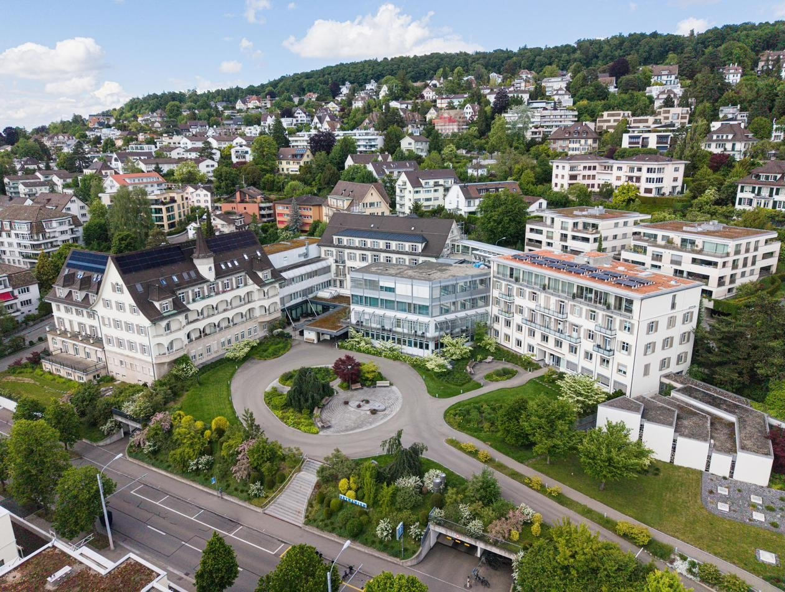
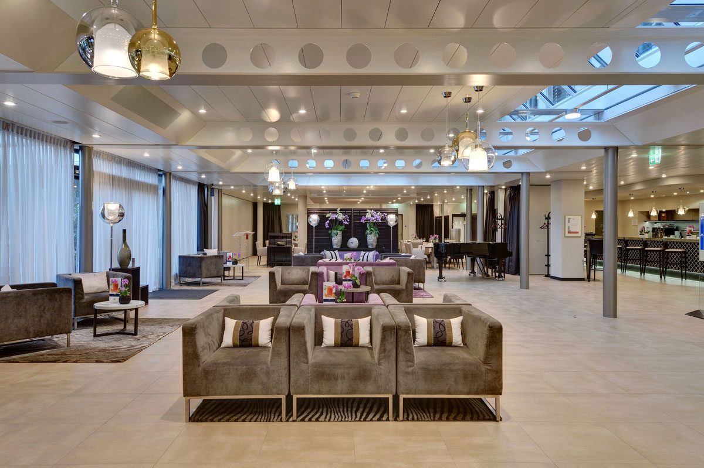
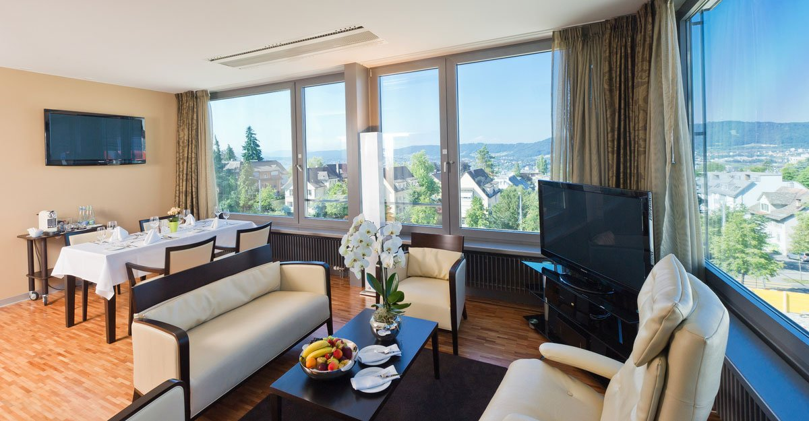
Privatklinik Bethanien — наш ключевой партнёр по медицине и чекапам с 2011 года и флагман частной медицины Швейцарии. Клиника расположена в престижном районе Цюриха с видом на озеро и Альпы и входит в сеть Swiss Medical Network.
Bethanien — участник Mayo Clinic Care Network: глобальной сети, объединяющей ведущие клиники мира вокруг опыта Mayo Clinic. Это значит не только врачей мирового уровня и передовое медицинское ноу-хау, но и сервис уровня пятизвёздочного отеля.
Клиника привыкла принимать гостей, для которых приватность критична: закрытые зоны, отдельные палаты-люкс и полная конфиденциальность на каждом этапе. Здесь умеют создавать условия для самых требовательных международных пациентов.
- Сеть
- Swiss Medical Network · Mayo Clinic Care Network
- Врачи
- 250+ специалистов с мировым именем
- Технологии
- Роботизированная хирургия Da Vinci
- Сервис
- Палаты-люкс с видом на озеро, room-service и кухня от шеф-повара
- Приватность
- Закрытые зоны и полная конфиденциальность
В отдельных случаях
Для сложных и специализированных случаев
Когда случай требует университетской экспертизы или узкой специализации, мы привлекаем ведущие клиники Швейцарии. Их лидерство подтверждено рейтингом Newsweek «World’s Best Hospitals 2026».
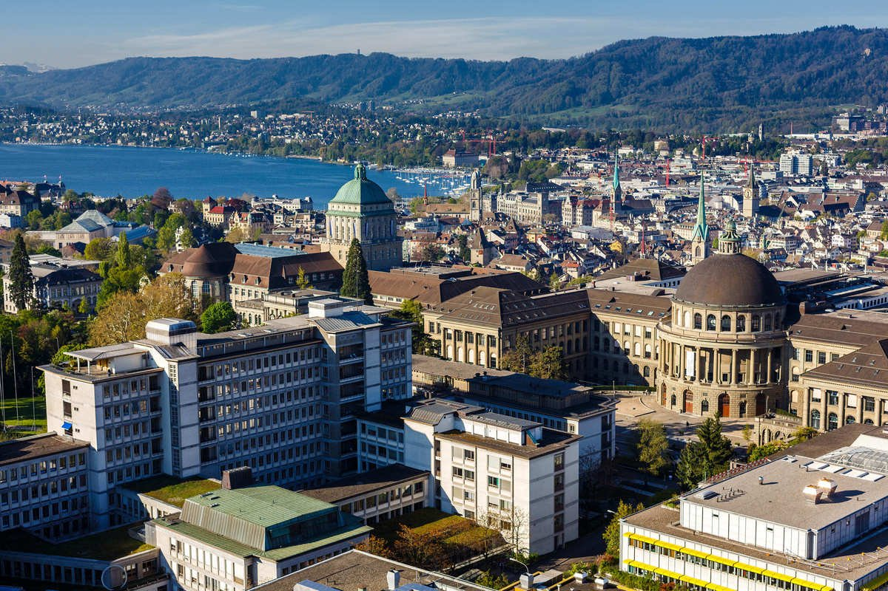
Университетская клиника Цюриха
Newsweek 2026 · №1 в Швейцарии
Крупнейшая университетская клиника страны и центр медицины высочайшего уровня. Привлекаем для сложных и редких случаев, требующих университетской экспертизы.
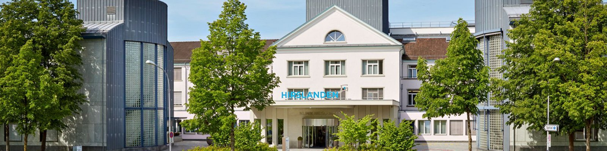
Klinik Hirslanden, Цюрих
Newsweek 2026 · №5 в Швейцарии
Одна из самых авторитетных частных клиник мира и флагман группы Hirslanden — широкий спектр специализаций на высшем уровне.
Реабилитация
Clinique Valmont
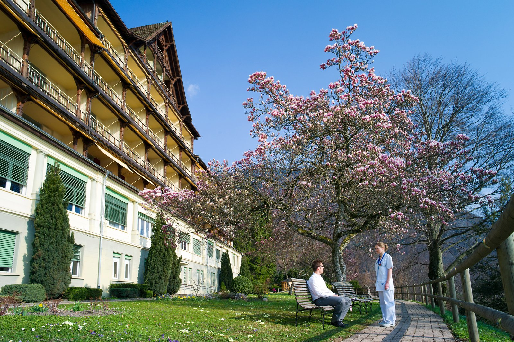
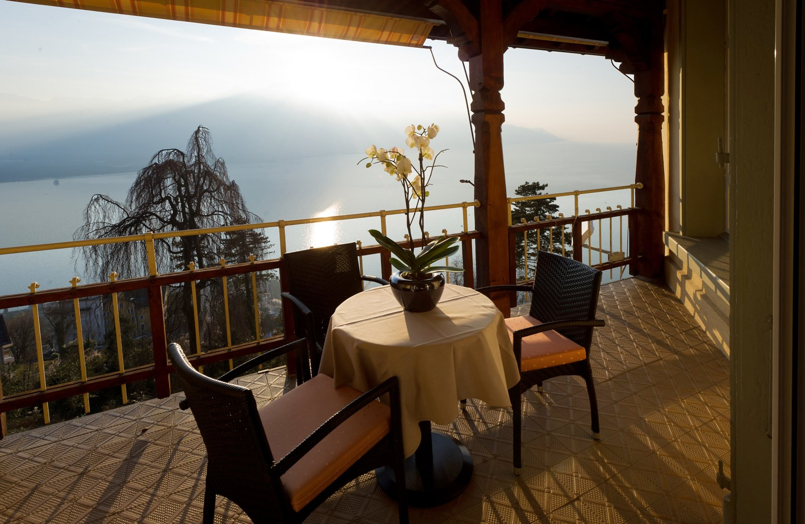
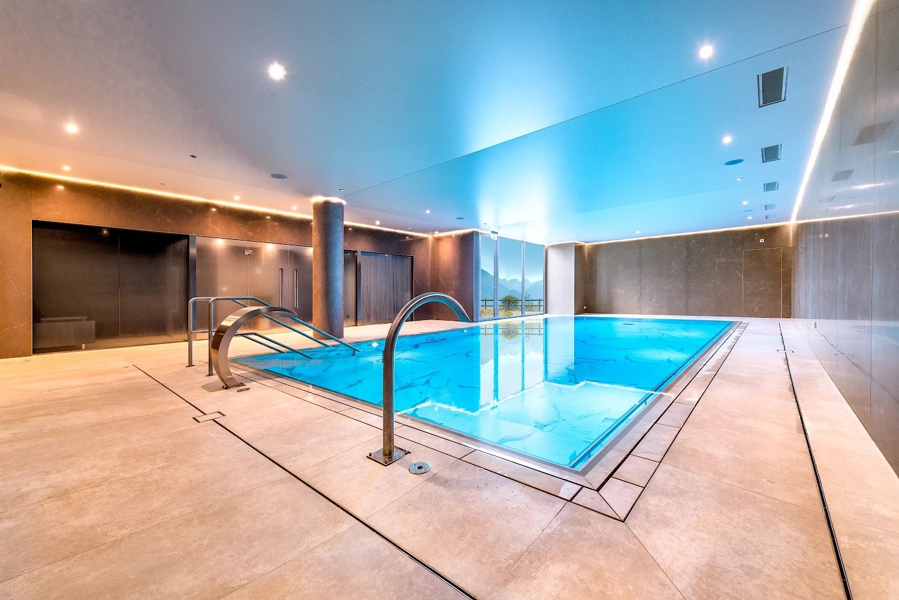
Глион над Монтрё · Swiss Medical Network
Наш партнёр по реабилитации, входящий в Swiss Medical Network. Специализируется на неврологической и ортопедической реабилитации в спокойной обстановке с панорамными видами на Женевское озеро — идеальное место для восстановления после операции и лечения.
Реабилитация — такая же часть пути, как и само лечение. Мы сопровождаем восстановление до полного возвращения к привычной жизни.
Эстетика и пластическая хирургия
Пластическая хирургия у мировых имён
Деликатные процедуры у ведущих хирургов Швейцарии — с гарантией приватности и восстановлением в резиденции.
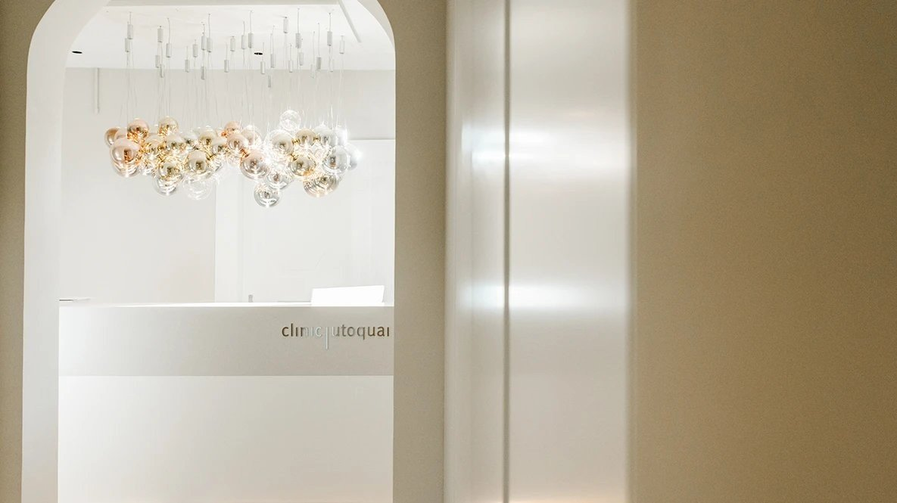
clinic utoquai
Одна из мировых центров эстетической хирургии и медицины в самом сердце Цюриха: операции груди, лица, носа, контуринг тела, дерматология, более 1000 м², максимальная дискретность.
SailerClinic
Всемирно известный центр эстетической хирургии лица, челюстно-лицевой и реконструктивной хирургии в Цюрихе. Основан профессором Германом Зайлером и продолжает традицию хирургии лица высочайшего уровня
Стоматология и зубная эстетика
Зубы и улыбка — у лучших специалистов Швейцарии

swiss smile
Сеть премиальных стоматологических центров: эстетическая стоматология, имплантология и полная реставрация улыбки. Акцент на комфорт и приватность.
Подробнее«Зубная эстетика — часть общего образа. Мы подбираем специалиста под конкретную задачу: от отбеливания до полной реставрации».
Психологическое здоровье и зависимости
Clinique Les Alpes
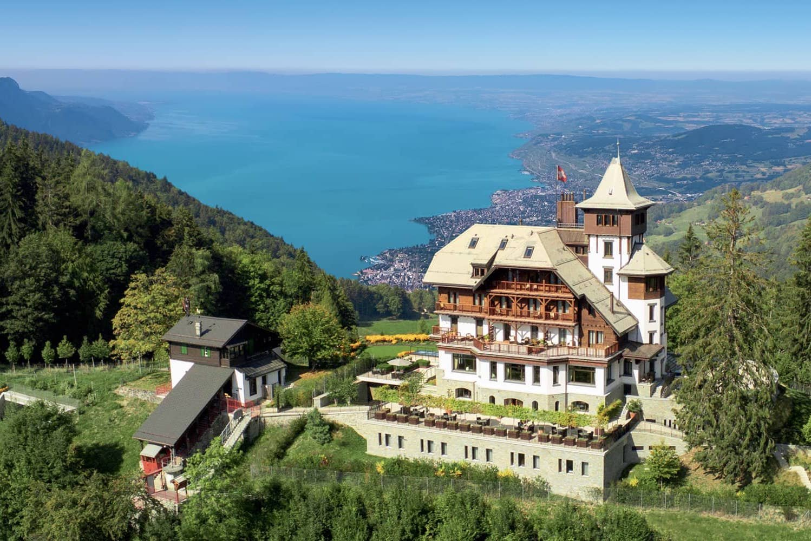
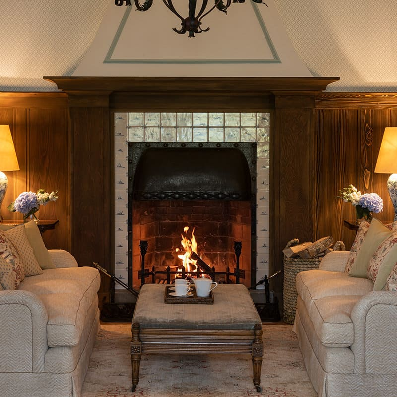
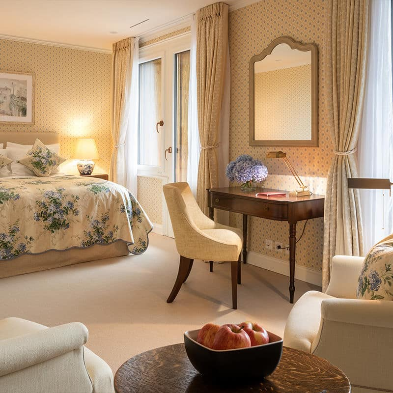
Монтрё · приватная клиника
Признана одной из лучших в мире · luxury rehab & mental health
Швейцарская клиника для лечения зависимостей (вещества и поведение), выгорания и психических расстройств — неоднократно признанная одним из лучших в мире люкс-центров реабилитации и психического здоровья. Индивидуальные программы в полной приватности, с видом на Женевское озеро и Альпы.
«Один пациент в один момент времени. Максимум дискретности — для тех, кому важна абсолютная приватность.»
Велнес, детокс и долголетие
Профилактика и восстановление на лоне швейцарской природы
Для долголетия, детокса и восстановления мы работаем с лучшими медицинскими велнес-центрами Швейцарии.
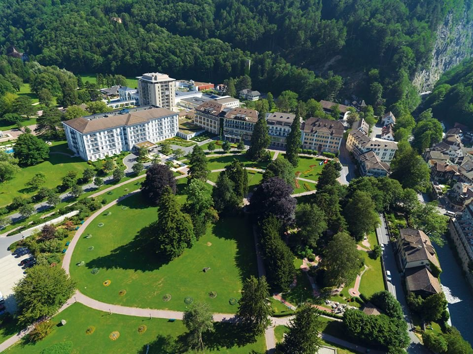
Tamina Health · Grand Resort Bad Ragaz
Seven Star Award · Medical Wellness / Longevity
Медицинский центр в одном из лучших велнес-резортов Альп, отмеченном международными наградами за spa и longevity. Программы Longevity, Detox, Weight Loss, Recharge и Health Check-up, междисциплинарная команда и собственные термальные источники Бад-Рагац.
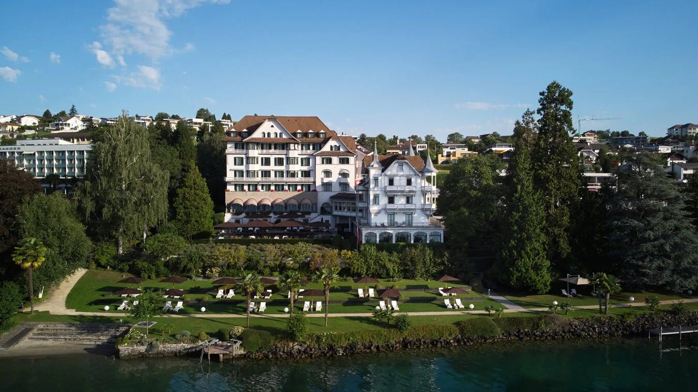
Chenot Palace Weggis
World's Best Detox Programme 2025
Легендарный детокс-ретрит на Фирвальдштетском озере. Метод Chenot с 1970 года: глубокий детокс, профилактика старения и программы долголетия на клеточном уровне.
Консультация